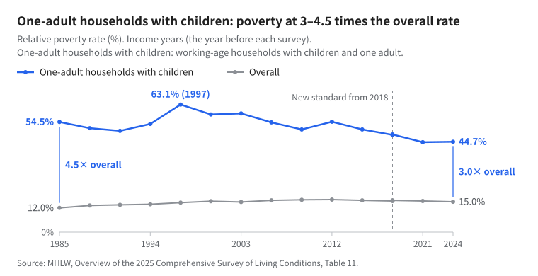
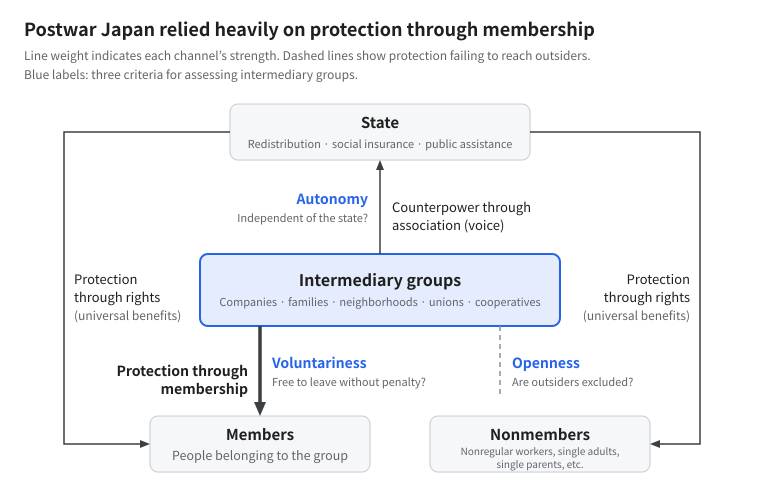

Whom Did Intermediary Associations Protect? An Essay on Poverty and Autonomy in Japan
Introduction
Behind poverty in Japan lies the decline of intermediary associations. Trade unions, neighborhood associations, and the company as a community no longer support people as they once did. This is a widely shared intuition, and it was my own starting point.
Yet this essay takes that intuition to be only half right. The problem is not simply a decline in the “quantity” of intermediary associations. It is that Japan’s intermediary associations were not independent of the state; that they also excluded nonmembers; and that postwar Japan entrusted people’s livelihood security to these groups.
What follows revisits the arguments of Montesquieu, Durkheim, Masao Maruyama, and Kojin Karatani on intermediary associations, then reformulates the hypothesis in light of poverty data. This exploratory essay offers a map for future empirical inquiry.
1. The Ambivalence of Intermediate Powers: Montesquieu and Revolution
In The Spirit of the Laws (1748), Montesquieu located the essence of monarchy in “intermediate powers”: forces subordinate to the monarch but possessing a basis of authority distinct from his. These included the nobility, the clergy, the parlements as repositories of the law, and the privileges of towns. His point is captured in the maxim: “No monarch, no nobility; no nobility, no monarch. Otherwise, there is a despot” (Book II, Chapter 4; translated here).
Two points matter. First, these forces could check despotism because their authority did not originate with the monarch. They rested on lineage, the Church, and legal tradition—foundations the king had not bestowed. Second, these were themselves privileges of status, and from the individual’s perspective they could also be oppressive.
The French Revolution therefore swept away intermediary associations. In The Social Contract (1762), Rousseau argued that the general will could best be expressed if there were no partial associations within the state; if such associations existed, they should be numerous and equal in power. The Le Chapelier Law of 1791 prohibited even occupational associations and workers’ combinations. Yet the revolutionary government that swept away the old powers ended in Robespierre’s dictatorship. Montesquieu’s argument consequently came to be reread as a critique of despotism rather than a defense of the nobility (Karatani, “Commentary”).
The same ambivalence appears in Japanese debates. The constitutional scholar Yoichi Higuchi argued that Japan should take up anew the significance of the French revolutionary model, which dismantled status-based intermediary associations and brought individuals face to face with the state, accepting its costs as well (Higuchi 1994). Whether one sees intermediary associations as a bulwark against despotism or as institutions that bind individuals leads to diametrically opposed prescriptions.
2. Durkheim’s Reconciliation—and Its Shadow
In the late nineteenth century, Durkheim sought to reconcile this opposition through institutions. In the preface to the second edition of The Division of Labor in Society (1902), he proposed rebuilding occupational groups as a remedy for the lack of regulation in economic life, or anomie. Between the state and the individual, he argued, there must be a layer of secondary groups that attract individuals and connect them to social life.
Durkheim did not, however, regard the state as an enemy. In Leçons de sociologie, he argued that it was the state that had freed individuals from the constraints of family, locality, and occupational groups. Conversely, without secondary groups, the state would crush the individual. Individual freedom emerges from the tension in which the state and intermediary groups check one another. This is Durkheim’s model.
The problem is how easily this model can be reinterpreted as state-led corporatism. Wartime Japan’s neighborhood units and Industrial Patriotic Associations exemplified the transformation of intermediary groups into instruments of state mobilization. For the postwar period, too, the political scientists Pempel and Keiichi Tsunekawa described Japan’s system as “corporatism without labor”: business and agricultural organizations were closely tied to the state, while labor was excluded from national policymaking (Pempel and Tsunekawa 1979). Intermediary groups do not, merely by existing, form a bulwark against despotism. They can also become the state’s instruments.
3. Masao Maruyama: What Matters Is Autonomy, Not Intermediacy
The decisive criterion Masao Maruyama introduced into this debate was “autonomy.” It is not enough for a group to stand between the state and the individual. The question is whether it is independent of power, rather than a creation of the state.
In “Thought and Politics,” Maruyama presented the European Church as a model of an autonomous group. Standing outside the state, the Church provided education and contested the state’s authority over it in country after country. In Japan, by contrast, Buddhist temples had already been incorporated into the machinery of government during the Tokugawa period. The Meiji state could therefore take control of education with little resistance. What limited autonomy remained in villages was also absorbed into the lowest tier of state administration through the municipal system. Maruyama called this process, which unfolded in the absence of groups capable of opposing the state, “equalization without freedom” (Maruyama, “Thought and Politics”).
In Japanese Thought (1961), Maruyama likewise identified the weakness of resistance from intermediary powers sustained by privileges of their own as one condition that enabled the Meiji state’s rapid centralization. Japan had long lacked strong social defenses against political power: an entrenched aristocratic tradition, self-governing towns, privileged guilds, and temples capable of refusing state intervention (Maruyama 1961).
In his English-language essay “Patterns of Individuation,” Maruyama further distinguished four ways in which individuals emerge from traditional communities during modernization (Maruyama 1965). Two axes—movement toward or away from association, and toward or away from political authority—yield four types: autonomization, democratization, privatization, and atomization. In Maruyama’s diagnosis, privatization and atomization appeared early in modern Japan and became dominant. Atomized individuals, ordinarily indifferent to public affairs, can abruptly swing toward fervent participation out of loneliness and anxiety. They are susceptible to throwing themselves behind a strong leader or into an enduring whole such as the national community.
4. Kojin Karatani: Associations Make Individuals
Kojin Karatani reread Maruyama as an “associationist” (Karatani 2006). In Karatani’s account, autonomous individuals do not exist prior to associations. Only through participation in autonomous groups such as cooperatives and trade unions do individuals become capable of standing firm even against the state.
Karatani traces these characteristics of the post-Meiji period back to the Tokugawa era. The Ikko Buddhist movement, associated with cities such as Sakai and peasant self-government in Kaga, was suppressed in the transition from the regimes of Oda Nobunaga and Toyotomi Hideyoshi to the Tokugawa order. In his view, this destroyed the very religious foundations that sustained autonomous association. Where there is no layer of “society” composed of voluntary associations, Karatani argues, resistance to capitalism flows toward statism rather than the self-organization of society. This is a crucial point when considering where anger at poverty may lead.
One qualification is necessary. To say that Japan’s intermediary groups were “weak” means weak vis-à-vis the state, not weak vis-à-vis their members. According to Manabu Miyazaki’s argument as presented by Karatani, what binds people in Japan is neither state law nor rules specific to a group, but diffuse norms known as seken—the surrounding social world—or kuki, the prevailing atmosphere (Karatani, “Commentary”). Asao Naito’s concept of “intermediary-group totalitarianism,” developed through his research on school bullying, can be read as another face of the same condition (Naito 2009). Japan’s intermediary groups were coercive internally and subordinate to the state externally. They neither checked despotism nor liberated individuals: the worst possible combination.
Karatani’s argument has its critics. The sociologist Shinji Miyadai dismissively characterized his position as “intermediary-groupism without the state” (Miyadai and Miyazaki 2004). This criticism can be read as an objection from a Durkheimian position that situates intermediary groups within a framework presupposing the state. Indeed, NAM—the New Associationist Movement, which Karatani founded in 2000—dissolved in 2003. I return to this opposition at the end of the essay.
5. Livelihood Security in Postwar Japan: “Protection through Membership”
Viewed from this perspective, the structure of livelihood security in postwar Japan becomes clear. The state kept direct redistribution limited and entrusted livelihood security to three channels: the company (lifetime employment, seniority wages, and corporate welfare), the family (the male-breadwinner model), and the Liberal Democratic Party’s distribution of benefits to its constituencies (public works, agricultural cooperatives, and protection for small and medium-sized enterprises). The political scientist Margarita Estévez-Abe calls these “functional equivalents” of welfare (Estévez-Abe 2008).
The 1979 vision of a “Japanese-style welfare society” explicitly assigned welfare responsibilities to families and local communities. In Karatani’s vocabulary of modes of exchange, this was a system in which the state (B) subcontracted much of redistribution to quasi-communities organized around reciprocity (A) embedded in the market (C). I call this “protection through membership.”
The dismantling of this system was not simply the result of structural changes such as deindustrialization and population aging. It was also deliberate politics. Yasuhiro Nakasone, who carried out the breakup and privatization of Japanese National Railways, later publicly stated that the National Railway Workers’ Union had to be destroyed because it formed the core of Sohyo, the General Council of Trade Unions of Japan (House of Representatives 2006). Sohyo dissolved in 1989.
The figures also show a contraction in “membership.”
- Nonregular employment rose from 6.04 million workers (15.3% of employees) in 1984 to 21.26 million (36.8%) in 2024 (MHLW 2025).
- The estimated unionization rate fell to 16.0% in 2025, the lowest since the survey began in 1947 (JILPT 2026a).
- Single-person households nearly doubled as a share of all households, from 18.2% in 1986 to 35.4% in 2025. Over the same period, the proportion of people aged 65 and over living with their children halved, from 64.3% to 32.2% (MHLW 2026a).
The loss of tame—reserves or buffers—described by Makoto Yuasa in Anti-Poverty (2008) can be read as the sudden loss of the cushioning that membership had provided.
6. Five Facts That Challenge the Hypothesis
The argument so far supports the intuition that “the decline of intermediary associations produced poverty.” Yet the following five facts make it difficult to sustain that intuition in its original form.
First, even when intermediary associations were strong, people outside them were unprotected. Among working-age households with children, the poverty rate for those with only one adult already exceeded 50% in 1985 (Figure 1). In the era when companies and families supposedly guaranteed livelihood security, these households—primarily single-mother households—faced higher poverty than they do today.


The rise in poverty between 1985 and 2012 also fits the data better when understood as a compositional effect—an increase in the proportion of people falling outside protection—than as a deterioration in the “quality” of protection. Moreover, because poverty is measured at the household level, the poverty of women economically dependent within households has always been difficult to see.
Second, poverty rates have fallen since 2012 while unionization has declined almost continuously. This decline in poverty, at least, cannot be attributed to the rebuilding of intermediary associations. Since relative poverty rates also move with median income, macroeconomic issues such as deflation and wage stagnation cannot be explained through institutional arguments alone.
Third, Japan’s intermediary associations were exclusionary. Enterprise unions protected insiders—male regular employees—and often accepted the expansion of nonregular employment. In a 2011 interview, Karatani himself noted that the Tokyo Electric Power Company’s labor union supported nuclear power, arguing that demonstrations were now being driven not by established organizations but by associations of individuals coming together (Karatani 2011). The intermediary associations that remained had been incorporated into the camp of capital and the state. Part of their “decline” was also liberation in Higuchi’s sense.
Fourth, international comparisons do not fit a simple model. Relative poverty rates in 2021 were 15.4% in Japan, 15.2% in the United States, 12.8% in Italy, and 6.3% in Denmark (JILPT 2026b). Southern European societies, often described as having strong family and community ties, are not low-poverty societies. Poverty is low in countries where organized groups have pressed the state for universal redistribution, as in the highly unionized Nordic countries. This is the finding of what is known as power resources theory (Korpi 1983; Esping-Andersen 1990). What matters is not whether intermediary associations exist, but where they stand in relation to the state.
Fifth, the “revival” of intermediary associations can provide an excuse for state withdrawal. From the “Japanese-style welfare society” to the triad of “self-help, mutual help, and public help,” praise for mutual help has gone hand in hand with the shrinking of public support. By fiscal 2025, Japan had 12,601 kodomo shokudo, community meal spaces for children (Musubie 2025). Nationwide support organizations describe them as practices of residents’ self-government, while also receiving support through government programs. Will these spaces develop into autonomous associations, or become subcontractors for a retreating state? That fork in the road is already before us.
7. Reformulating the Hypothesis: Three Channels and Three Criteria
On this basis, I reformulate the hypothesis as follows. Poverty in Japan is explained not by “the decline of intermediary associations” as such, but by the overlap of three processes (Figure 2).
- The contraction of “protection through membership”: the protection provided by quasi-communities lacking autonomy from the state came to cover fewer people.
- The underdevelopment of “protection through rights”: universal benefits and social insurance were not sufficiently developed to replace it.
- The absence of “counterpower through association”: autonomous, open associations capable of representing newly impoverished groups and pressing demands on the state failed to develop.


Intermediary groups themselves should be assessed at three boundaries: “autonomy” vis-à-vis the state, “voluntariness” vis-à-vis members (can people leave without penalty?), and “openness” vis-à-vis nonmembers (are outsiders excluded?). These correspond, respectively, to Maruyama’s theory of autonomous groups, Naito’s account of intermediary-group totalitarianism, and critiques of enterprise unions’ protection of insiders.
8. From Exploration to Verification
This reformulation remains a hypothesis. Going forward, I would like to investigate three questions.
- How much of the rise in poverty can compositional effects explain? I would decompose the extent to which an increase in household types outside existing protection explains the rise in poverty. The poverty rates by demographic characteristics published on Aya Abe’s Poverty Statistics website offer a starting point (Abe 2024). The argument that demographic change explains much of the growth in inequality, however, has been familiar since Fumio Ohtake’s Inequality in Japan (2005). The novelty lies less in the figures themselves than in rereading them through the lens of “membership.”
- Do associations function as a channel for “voice”? Does membership in associations direct low-income people’s discontent toward demands for redistribution? Among those without such membership, is discontent more likely to turn toward exclusionary attitudes? The Japanese data from the World Values Survey (WVS) include questions on membership in trade unions and self-help groups, as well as whether nationals should receive priority when jobs are scarce.
- Can the “quality” of membership be measured? Publicly available data tell us only the type of membership; they do not measure autonomy, voluntariness, or openness. These dimensions require an original survey. Only then can this essay’s reformulation become a testable claim.
When writing in a venue without peer review, making the hypotheses and analysis plan public before beginning the analysis would help safeguard the integrity of the argument.
Conclusion: The Despotism of Social Atmosphere and the Possibility of Association
My theoretical assessment should also be explicit. If poverty reduction alone is the criterion, the stronger empirical case lies with Durkheim’s account of mutual checks between the state and intermediary groups, rather than with Karatani’s associationism, which seeks to sublate the state. For Karatani, mode of exchange D is a regulative idea in the Kantian sense, not a blueprint for institutional design.
Even so, Karatani’s diagnosis is incisive. As early as 2006, he wrote that in societies with weak traditions of association, online spaces amplify anonymous isolation rather than connection, and that when desires unleashed under anonymity become political, they are prone to generate movements that exclude others (Karatani 2006). In 2011, he also argued that waiting for someone else to act on one’s behalf instead of taking action oneself ultimately leads to handing power to a popularity-seeking demagogue (Karatani 2011).
In contemporary Japan, Montesquieu’s despotism appears not as a single despotic ruler, but as the despotism of public opinion and the prevailing social atmosphere. The discontent of atomized people in poverty is easily drawn toward identification with the imagined community of the nation, rather than demands for redistribution.
This essay therefore takes a dual position: Durkheimian institutional design should be scrutinized through Maruyama’s and Karatani’s criterion of autonomy. Universal benefits should be combined with occupational and local groups, while continually asking whether those groups are becoming subcontractors for the state, constraining their members, or shutting out outsiders. Whom did intermediary associations protect? That question is also a question about whom they will protect in the future.
References and Data Sources
References
English renderings of Japanese titles below are descriptive translations, not indications of published English editions.
- Durkheim, Émile (1902). De la division du travail social, 2nd ed., preface. Japanese translation by Tahara (田原音和).
- Durkheim, Émile (1950). Leçons de sociologie. Japanese translation by Miyajima (宮島喬) and Kawakita (川喜多喬), Misuzu Shobo.
- Esping-Andersen, Gøsta (1990). The Three Worlds of Welfare Capitalism. Polity Press.
- Estévez-Abe, Margarita (2008). Welfare and Capitalism in Postwar Japan. Cambridge University Press.
- Higuchi, Yoichi (1994). The Constitutional Structure of the Modern Nation-State. University of Tokyo Press. In Japanese.
- Karatani, Kojin (2006). “Maruyama Masao and Associationism.” Shiso, no. 988. In Japanese.
- Karatani, Kojin (2011). “Anti-Nuclear Demonstrations Will Change Japan.” Shukan Dokushojin, June 17. In Japanese.
- Karatani, Kojin. “Commentary.” In Manabu Miyazaki, Law and Codes. Kadokawa Bunko. In Japanese.
- Korpi, Walter (1983). The Democratic Class Struggle. Routledge & Kegan Paul.
- Maruyama, Masao (1961). Japanese Thought. Iwanami Shinsho. In Japanese.
- Maruyama, Masao. “Thought and Politics.” Collected Works of Masao Maruyama, vol. 7. Iwanami Shoten. In Japanese.
- Maruyama, Masao (1965). “Patterns of Individuation and the Case of Japan: A Conceptual Scheme.” In M. B. Jansen, ed., Changing Japanese Attitudes Toward Modernization. Princeton University Press. Japanese translation in Collected Works of Masao Maruyama, vol. 9.
- Miyadai, Shinji, and Tetsuya Miyazaki (2004). M2: In Our Time. Asahi Bunko. In Japanese.
- Montesquieu (1748). The Spirit of the Laws, Book II, Chapter 4.
- Naito, Asao (2009). The Structure of Bullying. Kodansha Gendai Shinsho. In Japanese.
- Ohtake, Fumio (2005). Inequality in Japan. Nihon Keizai Shimbunsha. In Japanese.
- Pempel, T. J., and Keiichi Tsunekawa (1979). “Corporatism without Labor? The Japanese Anomaly.” In P. Schmitter and G. Lehmbruch, eds., Trends toward Corporatist Intermediation. Sage.
- Rousseau (1762). The Social Contract, Book II, Chapter 3.
- Yuasa, Makoto (2008). Anti-Poverty: Escaping the “Slide Society”. Iwanami Shinsho. In Japanese.
Data sources
- Abe, Aya (2024). “Trends in Relative Poverty Rates (2022 Survey Update).” Poverty Statistics website. In Japanese.
- Ministry of Health, Labour and Welfare (MHLW) (2025). “Implementation of the Part-Time and Fixed-Term Employment Act and the Worker Dispatching Act.” In Japanese.
- MHLW (2026a). “Overview of the 2025 Comprehensive Survey of Living Conditions: I. Households and Household Members.” In Japanese.
- MHLW (2026b). “Overview of the 2025 Comprehensive Survey of Living Conditions: II. Income of Different Household Types.” In Japanese.
- Japan Institute for Labour Policy and Training (JILPT) (2026a). “Estimated Unionization Rate Falls to 16.0%, a Record Low for the Fourth Consecutive Year.” Business Labor Trend, March. In Japanese.
- JILPT (2026b). “Databook of International Labour Statistics 2026, Table 5-16: Relative Poverty Rates.” In Japanese.
- Musubie (2025). “2025 Nationwide Survey of Kodomo Shokudo: Summary.” In Japanese.
- House of Representatives (2006). “Written Question Concerning Former Prime Minister Yasuhiro Nakasone’s Remarks on the National Railway Workers’ Union.” In Japanese.
- World Values Survey Association. “Conditions of Use.”